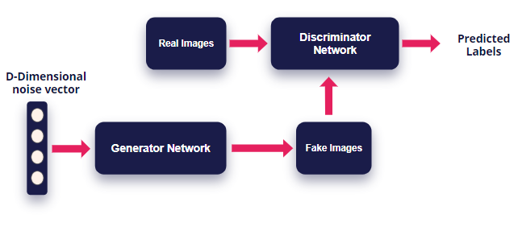
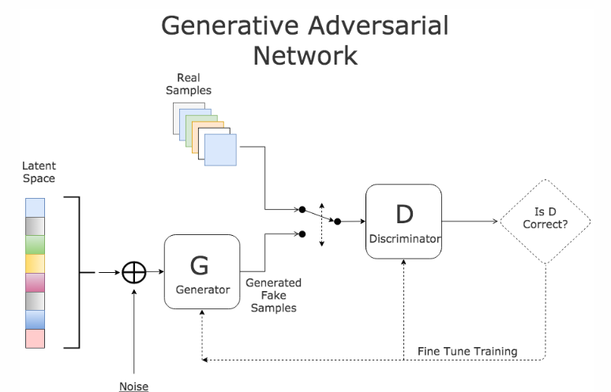

Synthetic Data Generation for Data Privacy
Introduction
There has been a rise in Data breaches across the world. This is of utmost concern and has led to strict data regulation in the pharma industry in the USA. Health Insurance Portability and Accountability Act (HIPPA) was enacted in the united states in 1996 and has been at the forefront of data privacy and it is increasingly important for organizations to make sure they adhere to these requirements and still continue to make advances in the ever-competitive industry.
Optum handles personally identifiable information of over 100 million customers and its at the forefront of research and development in medicine. But these stricter regulations and inter company data sharing practices is proving to be a hinderance for fast innovation as Data access sharing in the organization can take up to 2 to 3 months.
The key question to answer here is: How can we safely and efficiently share encrypted data that is also useful?
Statistical Similarity
The team has to make sure that the generated datasets are statistically similar to the original data to preserve its utility. The generated dataset should have minimal loss when compared to the original data. For both categorical and continuous value columns, the algorithms should be robust enough to not only preserve the multimodal distribution for individual columns, but also the joint distribution of the columns. the algorithm should detect intricate relationships between columns and preserve them in the generated synthetic data working equally well on balanced as well as imbalanced datasets.
We will be evaluating the datasets as follows:
Descriptive Statistics
- Central Tendencies (Mean, Median and Mode)
- Standard Deviation
- Skewness
- Kurtosis
- Unique Values
Principle Component Analysis
Principal Component Analysis or PCA is a linear feature extraction technique. It performs a linear mapping of the data to a lower-dimensional space in such a way that the variance of the data in the low-dimensional representation is maximized. It does so by calculating the eigenvectors from the covariance matrix. The eigenvectors that correspond to the largest eigenvalues (the principal components) are used to reconstruct a significant fraction of the variance of the original data.
In simpler terms, PCA combines your input features in a specific way that you can drop the least important feature while still retaining the most valuable parts of all of the features. As an added benefit, each of the new features or components created after PCA are all independent of one another.
t-Distributed Stochastic Neighbor Embedding (t-SNE)
t-Distributed Stochastic Neighbor Embedding (t-SNE) is a non-linear technique for dimensionality reduction that is particularly well suited for the visualization of high-dimensional datasets. It is extensively applied in image processing, NLP, genomic data and speech processing. To keep things simple, here’s a brief overview of working of t-SNE
- The algorithms starts by calculating the probability of similarity of points in high-dimensional space and calculating the probability of similarity of points in the corresponding low-dimensional space. The similarity of points is calculated as the conditional probability that a point A would choose point B as its neighbor if neighbors were picked in proportion to their probability density under a Gaussian (normal distribution) centered at A.
- It then tries to minimize the difference between these conditional probabilities (or similarities) in higher-dimensional and lower-dimensional space for a perfect representation of data points in lower-dimensional space.
- To measure the minimization of the sum of difference of conditional probability t-SNE minimizes the sum of Kullback-Leibler divergence of overall data points using a gradient descent method.
Note: Kullback-Leibler divergence or KL divergence is is a measure of how one probability distribution diverges from a second, expected probability distribution.
In simpler terms, t-Distributed stochastic neighbor embedding (t-SNE) minimizes the divergence between two distributions: a distribution that measures pairwise similarities of the input objects and a distribution that measures pairwise similarities of the corresponding low-dimensional points in the embedding.
In this way, t-SNE maps the multi-dimensional data to a lower dimensional space and attempts to find patterns in the data by identifying observed clusters based on similarity of data points with multiple features. However, after this process, the input features are no longer identifiable, and you cannot make any inference based only on the output of t-SNE. Hence it is mainly a data exploration and visualization technique.
PCA vs t-SNE
Although both PCA and t-SNE have their own advantages and disadvantages, some key differences between PCA and t-SNE can be noted as follows:
- t-SNE is computationally expensive and can take several hours on million-sample datasets where PCA will finish in seconds or minutes.
- PCA it is a mathematical technique, but t-SNE is a probabilistic one.
- Linear dimensionality reduction algorithms, like PCA, concentrate on placing dissimilar data points far apart in a lower dimension representation. But in order to represent high dimension data on low dimension, non-linear manifold, it is essential that similar data points must be represented close together, which is something t-SNE does not PCA.
- Sometimes in t-SNE different runs with the same hyperparameters may produce different results hence multiple plots must be observed before making any assessment with t-SNE, while this is not the case with PCA.
- Since PCA is a linear algorithm, it will not be able to interpret the complex polynomial relationship between features while t-SNE is made to capture exactly that.
Model Compatibility
The solution should perform equally good across various machine learning models when compared to the original dataset. For this project, we will be considering three major datasets currently in use across the industry which are namely:
- Patient Demographics Data
- Claims data
- Prescription Data
The model output will be compared on multiple Machine learning across various use cases modelled on above data. This will ensure apart from the similar statistical properties, the data has equally good predictive power

Above image gives us a better idea of the overall process we are going to follow here.
With the existing data Sources, the team will formulate analytical datasets common use cases with the data such as
- Predicting length of stay in the ICU
- ...
- ...
- (Inputs required from business on the potential uses of this data)
These datasets will be run through various machine learning algorithms ranging from simple, ensamble to Neural networks to evaluate their performance on holdout data to compare their usefulness in real world usage
Reidentification Risk
Along with Statistical similarity and Model compatibility, we need to ensure to minimize reidentification risk for the data points. Current anonymization techniques directly mask user demographics information to protect privacy, but bad actors can still join this data with other databases to identify individuals.
Original data has the best utility but as we mask more and more demographics information for privacy and regulatory reasons, the information provided by the dataset decreases. This in turn slows down research and development which could've potentially saved lives.
Sone of the current industry practices to prevent reidentification include:
Data Anonymization Data anonymization means directly masking the important demographic and personally identifiable attributes from the dataset. Few techniques include:
Removal: This process involves removing entire fields of data to reduce the risk of linking it to any source.
Redaction: This is used in many forms of government communication. It’s a simple form of removing sensitive information – someone will print out a hard copy of a document and manually mark out sensitive or identifying information before passing it off to another party.
Encryption: For the most security, data anonymization isn’t meant to be able to be reversed, but some people and organizations still use encryption as their means of anonymization. Encryption uses technology to render sensitive information as unreadable or unintelligible and can only be read after application of a decryption key, which must be kept separate from the encrypted files. Because there is a decryption key at all, however, there is a higher risk of potentially exposing or accessing sensitive information.
Differential Privacy Differential privacy is a system for publicly sharing information about a dataset by describing the patterns of groups within the dataset while withholding information about individuals in the dataset. Roughly, an algorithm is differentially private if an observer seeing its output cannot tell if a particular individual's information was used in the computation. Differential privacy is often discussed in the context of identifying individuals whose information may be in a database. Although it does not directly refer to identification and reidentification attacks, differentially private algorithms probably resist such attacks
Although differential privacy is effective, it has a key shortcoming that it cannot perform well on Machine learning models because of the added noise.
Synthetic Data Generation This method is the state of the art in reducing the reidentification risk. As we observed earlier, Data anonymization if effective but reduces the utility, Differential privacy adds small noise but has very bad model compatibility. However, Synthetic data, can be tuned to add privacy without losing either the utility, neither exposing privacy of individual data points. As the data doesn't represent any real entity, the disclosure of sensitive private data is eliminated. If the information available in the released synthetic data matches with any real entity participated in the original data then it is purely a co-incidence which gives individuals plausible deniability
A synthetic dataset is a repository of data that is generated programmatically.
- It can be numerical, binary, or categorical (ordinal or non-ordinal),
- The number of features and length of the dataset should be arbitrary
- It should preferably be random and the user should be able to choose a wide variety of statistical distribution to base this data upon i.e. the underlying random process can be precisely controlled and tuned,
- If it is used for classification algorithms, then the degree of class separation should be controllable to make the learning problem easy or hard,
- Random noise can be interjected in a controllable manner
- For a regression problem, a complex, non-linear generative process can be used for sourcing the data
Why GANs?
Introduction
A generative adversarial network (GAN) is a class of machine learning systems invented by Ian Goodfellow in 2014. GAN uses algorithmic architectures that use two neural networks, pitting one against the other (thus the “adversarial”) in order to generate new, synthetic instances of data that can pass for real data.

GANs consist of Two neural networks contest with each other in a game. Given a training set, this technique learns to generate new data with the same statistics as the training set. The two Neural Networks are named Generator and a Discriminator.
Working
Generator The generator is a neural network that models a transform function. It takes as input a simple random variable and must return, once trained, a random variable that follows the targeted distribution. The generator randomly feeds actual image and generated images to the Discriminator. The generator starts with Generating random noise and changes its outputs as per the Discriminator. If the Discriminator is successfully able to identify that generate input is fake, then then its weights are adjusted to reduce the error.
Discriminator The Discriminators job is to determine if the data fed by the generator is real or fake. The discriminator is first trained on real data, so that it can identify it to acceptable accuracy. If the Discriminator is not trained properly, then it in turn will not be accurately able to identify fake images thus poorly training the Generator.
This is continued for multiple iterations till the discriminator can identify the real/fake images purely by chance only.

Algorithm: Now lets see how GANs algorithm works internally.
- The generator randomly feeds real data mixed with generated fake data for the discriminator
- To begin, in first few iterations, the generator produces random noise which the discriminator is very good at detecting that the produced image is fake.
- Every iteration, the discriminator catches a generated image as fake, the generator readjusts its weights to improve itself. much like the Gradient Descent algorithm
- Over time, after multiple iterations, the generator becomes very good at producing images which can now fool the discriminator and pass as real ones.
- Now, its discriminators turn to improve its detection algorithm by adjusting its network weights.
- This game continues till a point where the discriminator is unable to distinguish a real image from fake and can only guess by chance.
Existing Research in Synthetic Data Generation
TGAN
This methodology has been created from the work provided in this paper:
Synthesizing Tabular Data using Generative Adversarial Networks
and this python package
https://pypi.org/project/tgan/
Generative adversarial networks (GANs) implicitly learn the probability distribution of a dataset and can draw samples from the distribution. Tabular GAN (TGAN) is a a generative adversarial network which can generate tabular databy learning distribution of the existing training datasets and can generate samples which are . Using the power of deep neural networks.
TGAN focuses on generating tabular data with mixed variable types (multinomial/discrete and continuous) and propose TGAN. To achieve this, we use LSTM with attention in order to generate data column by column. To asses, we first statistically evaluate the synthetic data generated by TGAN.
The paper also evaluates Machine learning models performance against traditional methods like modelling a multivariate probability or randomization based models.
Data preparation
For a table containing discrete and continuous random variables, They follow some probability distribution. Each row in the table is a sample from this distribution, whihch is sampled independently and the algorithms learn a generative model such that samples generated from this model can satisfy two conditions:
- A Machine Learning model using the Synthetic table achieves similar accuracy on the test table
- Mutual information between an arbitrary pait of variables is similar
Numerical Variables
For the model to learn the data effectively, a reversible transformation is applied. The a numerical variables are converted into a scalar in the range (1, 1) and a multinomial distribution, and convert a discrete variable into a multinomial distribution.
Often, numerical variables in tabular datasets follows multimodal distribution. Gaussian Kernal density estimation is used to estimate these number of noes in the continuous variable. To sample values from these, a gaussian mixture model is used.
Categorical Variables - Improvement needed
categorical variables are directly converted to to one-hot-encoding representation and add noise to binary variables
In TGAN, the the discriminator D tries to distinguish whether the data is from the real distribution, while the generator G generates synthetic data and tries to fool the discriminator. the algorithm uses a Long Short Term Memory(LSTM) as generator and a Multi Layer Perceptron (MLP) as a discriminator.
Implementation (sample code)
import warningswarnings.filterwarnings('ignore')import pandas as pdimport tensorflow as tffrom tgan.model import TGANModelfrom tgan.data import load_demo_datadef tgan_run(data, cont_columns): tgan = TGANModel(continuous_columns) return tgan.fit(data)def tgan_samples(model, num_samples): return tgan.sample(100000)Results
CTGAN
CTGAN is a GAN-based method to model tabular data distribution and sample rows from the distribution. CTGAN implements mode-specific normalization to overcome the non-Gaussian and multimodal distribution (Section 4.2). We design a conditional generator and training-by-sampling to deal with the imbalanced discrete columns (Section 4.3). And we use fully-connected networks and several recent techniques to train a high-quality model.
Several unique properties of tabular data challenge the design of a GAN model.
- Mixed data types Real-world tabular data consists of mixed types. To simultaneously generate a mix of discrete and continuous columns, GANs must apply both softmax and tanh on the output.
- Non-Gaussian distributions: In images, pixels’ values follow a Gaussian-like distribution, which can be normalized to [−1, 1] using a min-max transformation. A tanh function is usually employed in the last layer of a network to output a value in this range. Continuous values in tabular data are usually non-Gaussian where min-max transformation will lead to vanishing gradient problem.
- Multimodal distributions. We use kernel density estimation to estimate the number of modes in a column. We observe that 57/123 continuous columns in our 8 real-world datasets have multiple modes. Srivastava et al. [21] showed that vanilla GAN couldn’t model all modes on a simple 2D dataset; thus it would also struggle in modeling the multimodal distribution of continuous columns.
- Learning from sparse one-hot-encoded vectors. When generating synthetic samples, a generative model is trained to generate a probability distribution over all categories using softmax, while the real data is represented in one-hot vector. This is problematic because a trivial discriminator can simply distinguish real and fake data by checking the distribution’s sparseness instead of considering the overall realness of a row.
- Highly imbalanced categorical columns. In our datasets we noticed that 636/1048 of the categorical columns are highly imbalanced, in which the major category appears in more than 90% of the rows. This creates severe mode collapse. Missing a minor category only causes tiny changes to the data distribution that is hard to be detected by the discriminator. Imbalanced data also leads to insufficient training opportunities for minor classes.
When feeding data to the GAN algorithm, CTGAN samples so that all categories are correctly represented. Specifically, the goal is to resample efficiently in a way that all the categories from discrete attributes are sampled evenly (but not necessary uniformly) during the training process, and to recover the (not-resampled) real data distribution during test
These three things need to be incorporated:
- Modify the input for conditional vector creation
- The generated rows should preserve the condition
- The conditional generator should learn the real data conditional distribution
Implementation (sample code)
import pandas as pdimport tensorflow as tffrom ctgan import load_demofrom ctgan import CTGANSynthesizerdata = load_demo()discrete_columns = ['workclass','education', 'marital-status', 'occupation', 'relationship', 'race', 'sex','native-country', 'income']ctgan = CTGANSynthesizer()ctgan.fit(data, discrete_columns)Results
Differentially Private GAN
Source: https://arxiv.org/pdf/1802.06739.pdf
One common issue in above proposed methodologies in GANs is that the density of the learned generative distribution could concentrate on the training data points, meaning that they can easily remember training samples due to the high model complexity of deep networks. This becomes a major concern when GANs are applied to private or sensitive data such as patient medical records, and the concentration of distribution may divulge critical patient information. Differentially Private GANs is achieved by adding carefully designed noise to gradients during the learning procedure.
DPGAN focuses on preserving the privacy during the training procedure instead of adding noise on the final parameters directly, which usually suffers from low utility. Noise is added to the gradient of the Wasserstein distance with respect to the training data.
Note: Wasserstein distance is a distance function defined between probability distributions on a given metric space
The algorithm guarantees that the parameters of discriminator and generator have differential privacy with respect to the sample training points. The algorithm inputs noise e in the generator parameters which enables this privacy, however one needs to perform a grid search over a large range of noise parameter e to get best results.
PATE-GAN
PATE: Ensemble of teacher and students can only access teacher output and not teacher data or parameters because of majority voting. Since it is semi-supervised, it assumes that students have access to public dataset. In PATE-GAN, we can use generated data instead of public dataset. Generative Adversarial Networks (GAN) provide a powerful method for using real data to generate synthetic data but it does not provide any rigorous privacy guarantees. Our method modifies the GAN machinery in a way that does guarantee privacy;
The synthetic data is (differentially) private with respect to the original data DP-GAN: The key idea is that noise is added to the gradient of the discriminator during training to create differential privacy guarantees. Our method is similar in spirit; during training of the discriminator differentially private training data is used, which results in noisy gradients, however, we use the mechanism introduced in A noticeable difference is that the adversarial training is no longer symmetrical: the teachers are now being trained to improve their loss with respect to G but G is being trained to improve its loss with respect to the student S which in turn is being trained to improve its loss with respect to the teachers.


G-PATE
Theoretically, the generator in GAN has the potential of generating an universal distribution, which is a superset of the real distribution, so it is not necessary for the student discriminator to be trained on real records. However, such a theoretical bound is loose. In practice, if a generator does generate enough samples from the universal distribution, there would be a convergence issue. On the other hand, when the generator does converge, it no longer covers the universal distribution, so the student generator may fail to learn the real distribution without seeing real records.
It is not necessary to ensure differential privacy for the discriminator in order to train a differentially private generator. As long as we ensure differential privacy on the information flow from the discriminator to the generator, it is sufficient to guarantee the privacy property for the generator. Therefore, instead of focusing on ensuring differential privacy for the whole GAN framework, we design a novel framework to guarantee that all information flowed from the discriminator to the generator satisfies differential privacy.
Compared to PATE-GAN, our approach has two advantages. First, we improve the use of privacy budget by applying it to the part of the model that actually needs to be released for data generation. Second, our discriminator can be trained on real data because itself does not need to satisfy differential privacy. The teacher discriminators do not need to be published, so they can be trained with non-private algorithms.
In addition, we design a gradient aggregator to collect information from teacher discriminators and combine them in a differentially private fashion. Unlike PATE-GAN, G-PATE does not require any student discriminator. The teacher discriminators are directly connected to the student generator. The gradient aggregator sanitizes the information flow from the teacher discriminators to the student generator to ensure differential privacy The privacy property is achieved by sanitizing all information propagated from the discriminators to the generator.
Sources
https://arxiv.org/pdf/1802.06739.pdf https://blog.cryptographyengineering.com/2016/06/15/what-is-differential-privacy/ https://medium.com/georgian-impact-blog/a-brief-introduction-to-differential-privacy-eacf8722283b https://www.techfunnel.com/information-technology/3-types-of-data-anonymization-techniques-and-tools-to-consider/ https://towardsdatascience.com/synthetic-data-generation-a-must-have-skill-for-new-data-scientists-915896c0c1ae https://www.ijstr.org/final-print/mar2017/A-Review-Of-Synthetic-Data-Generation-Methods-For-Privacy-Preserving-Data-Publishing.pdf